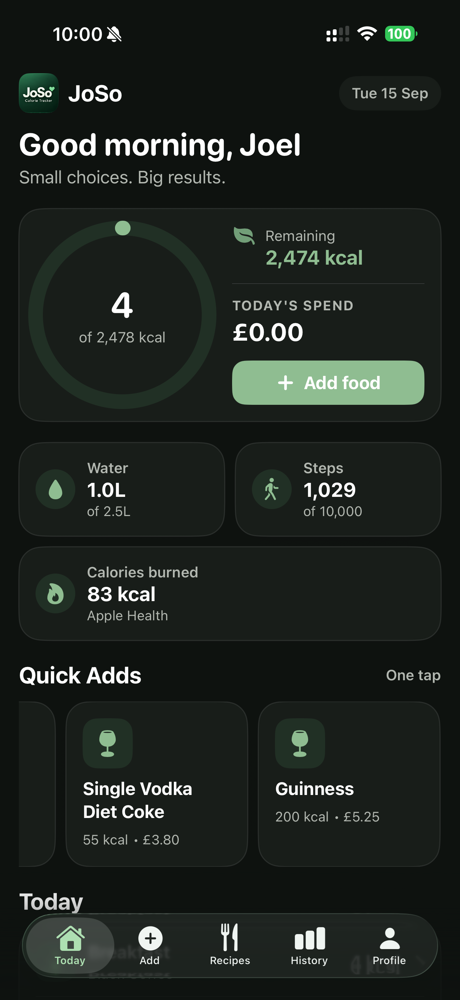
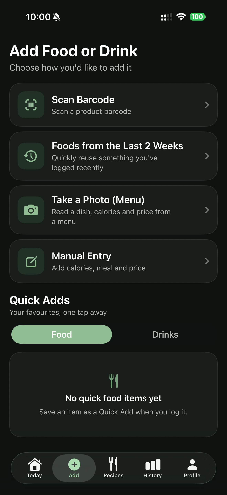
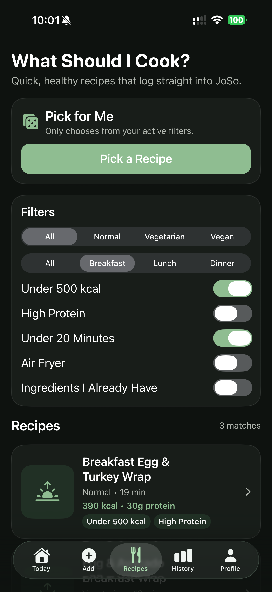
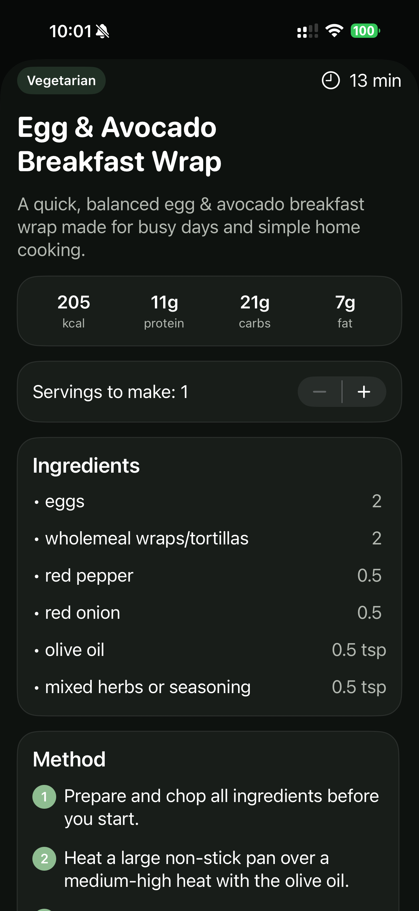
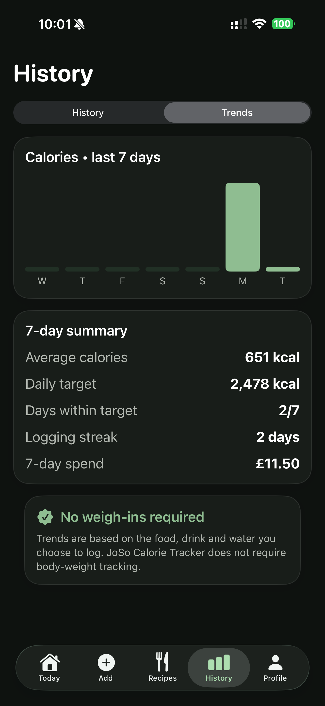
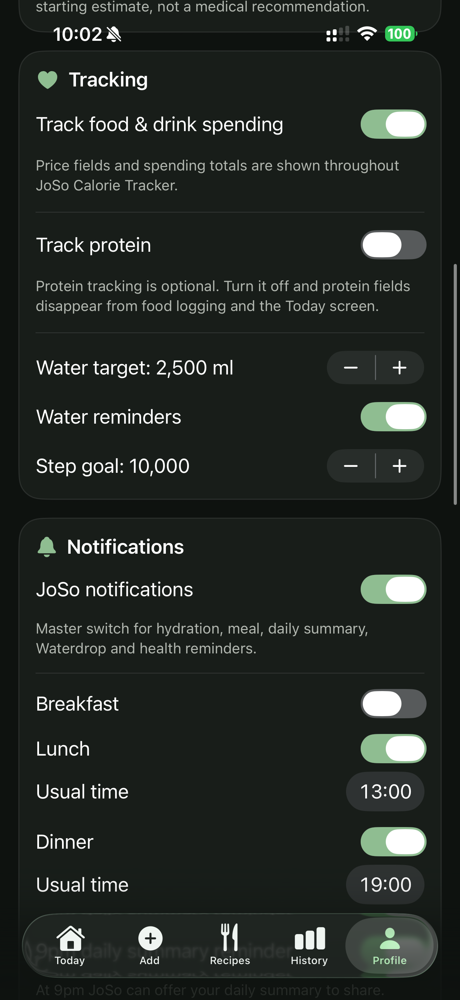

＋
Fast food logging
Scan barcodes, reuse recent foods, save favourites as Quick Adds or enter a meal manually. Built to make logging take seconds.
Calories, meals, hydration, recipes and activity in one beautifully simple app — without turning healthy living into another chore.

JoSo brings the everyday pieces of health tracking together, so you can spend less time jumping between apps and more time getting on with your day.
Scan barcodes, reuse recent foods, save favourites as Quick Adds or enter a meal manually. Built to make logging take seconds.
Keep an eye on water, steps and active calories from the same Today screen, with Apple Health integration for activity.
Browse simple recipes, filter by dietary preference and goals, or let “Pick for Me” choose. Log a recipe straight into your day.
See what you've logged, review recent days and understand your calorie trends and consistency over time — with no weigh-ins required.
Optional health tracking features are kept away from the main dashboard and can use Face ID/device protection for additional privacy.
If you want it, JoSo can track what you spend on food and drink alongside nutrition. If you don't, simply turn it off.
Use the method that suits the moment: scan a barcode, choose something from the last two weeks, read a menu, use a Quick Add or enter it yourself.

Filter recipes by Normal, Vegetarian or Vegan, meal type, calories, protein, cooking time and more. When you find one you like, its nutrition can be logged directly into JoSo.


Review calorie history, daily targets, logging streaks and optional spending. JoSo is designed to be useful without requiring body-weight tracking.

Your personal JoSo tracking records are stored locally on your iPhone. JoSo doesn't operate a cloud account containing your diary, so we can't browse or retrieve those local records.
You control your backup. JoSo lets you export your data to a file and choose where to store it. If you delete the app or lose the device without a usable backup, we cannot recover the locally stored data for you.
Read the Privacy PolicyJoSo started as a small project for Joel and Sophie. We were tired of using multiple paid apps just to keep track of everyday health, calories and routines, so we started building the app we actually wanted to use.
What began as something personal became JoSo: a simple, privacy-conscious health companion designed to bring the useful bits together without unnecessary complexity.
Jo + So = JoSo

JoSo Calorie Tracker is preparing to launch on the App Store.
Contact JoSo